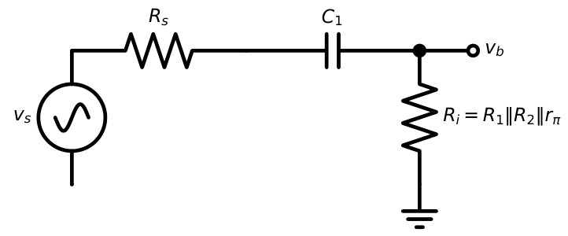
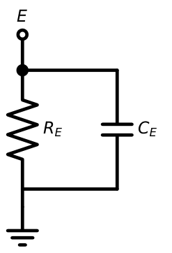
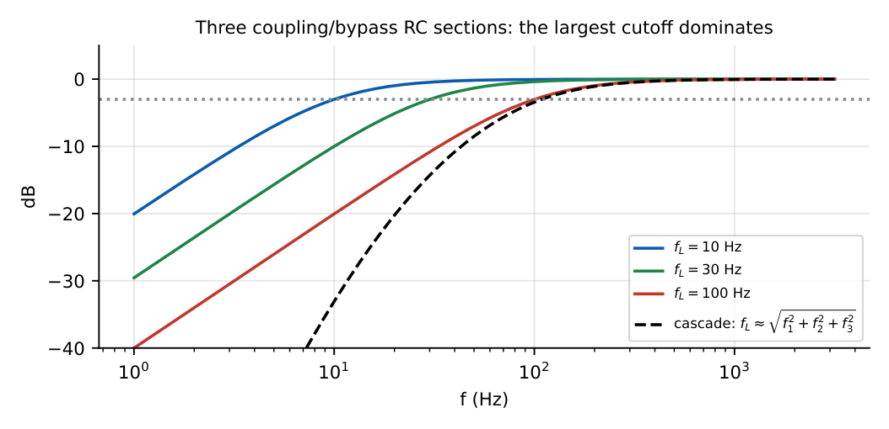
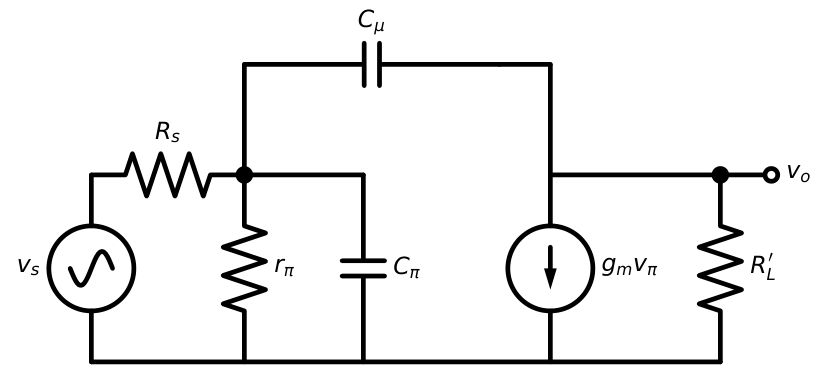
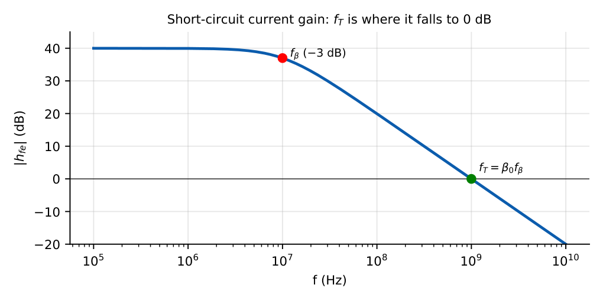
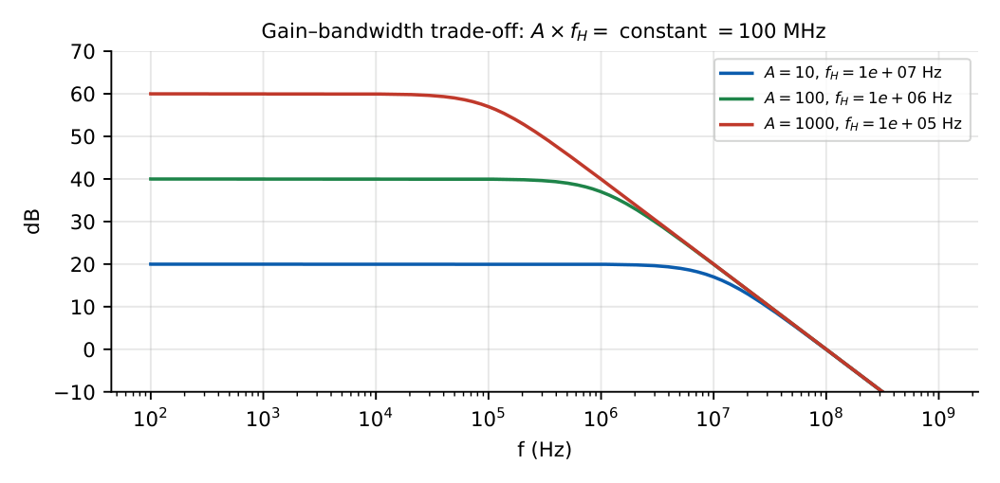

Frequency Response of BJT Amplifiers
In this chapter
- 11.1 Frequency-response concept
- 11.2 Low-frequency response
- 11.3 Coupling-capacitor effects
- 11.4 Bypass-capacitor effects
- 11.5 High-frequency response
- 11.6 Internal transistor capacitances
- 11.7 Miller effect
- 11.8 Hybrid-\(\pi\) high-frequency model
- 11.9 Lower and upper cutoff frequencies
- 11.10 Bandwidth
- 11.11 Gain-bandwidth relationship
- 11.12 Bode plots
- 11.13 GATE frequency-response problems
11.1 Frequency-response concept
A real amplifier’s gain is flat only over a middle band. At low frequencies the coupling and bypass capacitors reduce the gain; at high frequencies the transistor’s internal capacitances do. The bandwidth is \(\mathrm{BW}=f_H-f_L\), where \(f_L,f_H\) are the frequencies at which the gain has fallen by \(3\) dB (\(1/\sqrt2\)) from the midband value \(A_M\).

11.2 Low-frequency response
Each capacitor with the resistance it sees forms a first-order high-pass section with cutoff \(f=1/(2\pi R_{eq}C)\) and transfer function \(\dfrac{jf/f_L}{1+jf/f_L}\).
11.3 Coupling-capacitor effects

\(f_{L1}=\dfrac1{2\pi(R_s+R_i)C_1}\) \(f_{L2}=\dfrac1{2\pi(R_C+R_L)C_2}\) (output; \(R_o\approx R_C\))
Amplifier of Chapter 9: \(R_s=1\) k, \(R_i=1.09\) k, \(C_1=10\ \mu\)F: \(f_{L1}=7.6\) Hz. \(R_C=R_L=3\) k, \(C_2=10\ \mu\)F: \(f_{L2}=1/(2\pi\times6\,\mathrm k\times10\ \mu)=2.65\) Hz.
11.4 Bypass-capacitor effects

\(C_E\) sees \(R_{seen}=R_E\|\left(r_e+\dfrac{R_s'}{\beta+1}\right)\) and gives \[f_{LE}=\frac1{2\pi R_{seen}C_E}.\]
\(R_{seen}=20.8\ \Omega\), \(C_E=100\ \mu\)F: \(f_{LE}=76.5\) Hz. This is usually the dominant low-frequency pole because \(R_{seen}\) is so small.
Overall lower cutoff for several sections: \(f_L\approx\sqrt{f_{L1}^2+f_{L2}^2+f_{LE}^2}\) (or the largest one if it dominates).
\(\sqrt{7.6^2+2.65^2+76.5^2}=77\) Hz.

11.5 High-frequency response
- Coupling and bypass capacitors are short circuits.
- Internal capacitances of the transistor cannot be neglected and shunt the signal path.
- The gain falls with a slope of \(-20\) dB/decade per pole above \(f_H\).
11.6 Internal transistor capacitances
- \(C_\pi=C_{je}+C_{de}\): base–emitter (junction + diffusion), typically \(10\)–\(100\) pF.
- \(C_\mu\): base–collector depletion capacitance, \(0.5\)–\(5\) pF; small but vital because of the Miller effect.
- \(r_x\): base spreading resistance (\(10\)–\(100\ \Omega\)), often ignored.
11.7 Miller effect
An impedance \(Z_F\) connected between input node 1 and output node 2 with \(v_2=A\,v_1\) can be replaced by \(Z_1=\dfrac{Z_F}{1-A}\) at the input and \(Z_2=\dfrac{Z_F}{1-1/A}\) at the output. For a capacitor \(C_\mu\) with \(A=-g_mR_L'\) (large): \[C_{M,in}=C_\mu(1+g_mR_L'),\qquad C_{M,out}=C_\mu\left(1+\frac1{g_mR_L'}\right)\approx C_\mu.\]

Miller multiplication applies only to inverting stages (CE, CS); it is the main reason a CE amplifier’s bandwidth is small. It does not apply to CB or CC (no gain feedback path through \(C_\mu\) from a high-gain inverting node).
11.8 Hybrid-\(\pi\) high-frequency model

\(f_T=\dfrac{g_m}{2\pi(C_\pi+C_\mu)}\) \(f_\beta=\dfrac{f_T}{\beta_0}\) \(|h_{fe}(f)|\approx\dfrac{f_T}{f}\) for \(f\gg f_\beta\)

11.9 Lower and upper cutoff frequencies
With the Miller equivalent (figure below):
\(C_{in}=C_\pi+C_\mu(1+g_mR_L')\), \(R_{th}=(R_s\|R_B)\|r_\pi\) (with \(r_x\) ignored)
\(f_H\approx\dfrac1{2\pi R_{th}C_{in}}\) (dominant input pole); output pole \(\dfrac1{2\pi R_L'C_\mu}\) is much higher.
\(g_m=80.4\) mS, \(f_T=400\) MHz, \(C_\mu=2\) pF. \(C_\pi+C_\mu=g_m/(2\pi f_T)=32\) pF, so \(C_\pi=30\) pF. \(R_L'=1.5\) k, \(g_mR_L'=121\). \(C_{in}=30+2\times122=274\) pF. \(R_{th}=(0.9\,\mathrm k)\|1.24\,\mathrm k=522\ \Omega\). \(f_H=1/(2\pi\times522\times274\ \mathrm{pF})=1.1\) MHz. Output pole: \(1/(2\pi\times1.5\,\mathrm k\times2\ \mathrm{pF})=53\) MHz (negligible).
11.10 Bandwidth
\(\mathrm{BW}=f_H-f_L\approx f_H\) when \(f_H\gg f_L\). Bandwidth is improved by: lowering \(R_{th}\) (small \(R_s\)), lowering \(R_L'\) (hence lower gain), using a cascode (removes Miller multiplication), or using negative feedback.
11.11 Gain-bandwidth relationship
For a single-pole amplifier the product \(|A_M|\times f_H\) is (nearly) constant. Lowering the gain (e.g. by adding an unbypassed \(R_E\), or by reducing \(R_L'\)) raises bandwidth by the same factor.

Stage above: \(|A_M|=121\), \(f_H=1.1\) MHz: GBW \(\approx133\) MHz. If \(R_L'\) is halved to \(0.75\) k, the gain halves to \(60\) and \(C_{in}=30+2(1+60.3)=152.6\) pF; \(f_H\) becomes \(1/(2\pi\times522\times152.6\,\mathrm{pF})=2.0\) MHz: roughly double, GBW is preserved (within \(10\%\)).
11.12 Bode plots
Pole at \(f_p\): slope changes by \(-20\) dB/dec (phase \(-45^\circ\) at \(f_p\), from \(0\) to \(-90^\circ\)).
Zero at \(f_z\): slope changes by \(+20\) dB/dec (phase \(+45^\circ\) at \(f_z\)).
At \(f_p\) the true gain is \(3\) dB below the asymptote. Phase at \(0.1f_p\) and \(10f_p\): \(-5.7^\circ\) and \(-84.3^\circ\).
The plot above has a zero at the origin (\(+20\) dB/dec), a pole at \(f_L\) that flattens it, and a pole at \(f_H\) that brings the slope to \(-20\) dB/dec.
11.13 GATE frequency-response problems
Q1. An RC high-pass filter with \(R=10\) k\(\Omega\) and \(C=1.59\ \mu\)F has a cutoff frequency of Hz.
Q2. \(C_\mu=2\) pF, \(|A_v|=50\). The Miller input capacitance contributed is pF.
Q3. A BJT has \(f_T=200\) MHz and \(\beta_0=100\). \(f_\beta\) is MHz.
Q4. A single-pole amplifier has midband gain \(100\) and \(f_H=1\) MHz. The frequency at which the gain magnitude is unity is closest to (A) 1 MHz (B) 10 MHz (C) 100 MHz (D) 1 GHz.
Q5. A transfer function has poles at \(1\) kHz and \(100\) kHz and no zeros. The high-frequency asymptotic slope beyond \(100\) kHz is (A) \(-20\) (B) \(-40\) (C) \(-60\) (D) \(0\) dB/decade.
Q6. At \(f=f_H\) of a single-pole low-pass, the phase of the gain (relative to midband) is degrees.
Answers: Q1: \(1/(2\pi\times10^4\times1.59\times10^{-6})=10\) Hz. Q2: \(2\times51=102\) pF. Q3: 2 MHz. Q4: (C) 100 MHz. Q5: (B) \(-40\). Q6: \(-45^\circ\).
- Compute \(f_{LE}\) for \(R_{seen}=30\ \Omega\), \(C_E=470\ \mu\)F. [11.3 Hz]
- \(f_T=500\) MHz, \(g_m=100\) mS, \(C_\mu=1\) pF. Find \(C_\pi\). [\(\approx30.8\) pF]
- CE amplifier: \(R_{th}=1\) k, \(C_{in}=100\) pF; \(f_H=?\) [1.59 MHz]
- Why does adding \(R_E\) (unbypassed) extend bandwidth? [Gain falls by \((1+g_mR_E)\), GBW constant]